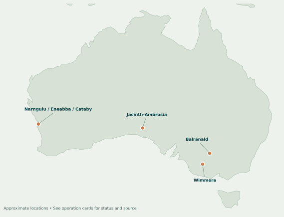

ESTABLISHED BUSINESS
Mineral sands
Mining and processing produce zircon and titanium products, including rutile and synthetic rutile. Sales volumes, product mix and realised prices move the financial result.
See the numbers →MINERAL SANDS / RARE EARTHS / AUSTRALIA
A clearer view of Iluka Resources: the established business, the refinery under construction, and the numbers shaping what comes next.
Independent analysis · Company disclosures through 30 October 2026
01 / THE BUSINESS
Iluka’s mineral sands business sells materials used in ceramics, pigments and industrial applications. Its rare earths ambitions depend on a refinery that is still being built.
ESTABLISHED BUSINESS
Mining and processing produce zircon and titanium products, including rutile and synthetic rutile. Sales volumes, product mix and realised prices move the financial result.
See the numbers →GROWTH PROJECT
The Eneabba refinery in Western Australia is under construction. Iluka targets commissioning in 2027; future output depends on completion, ramp-up and feedstock.
Explore the project →Refinery capacity and offtake agreements are plans for the future. They are not evidence of commercial refinery output today.
Read the quarterly review ↗02 / PERFORMANCE
Switch measures to explore the annual trend or the latest five quarters. Select a data point for its exact value; the table remains available below.
ILUKA IN CONTEXT
Annual · A$ million
| Period | Reported value |
|---|
2025 FULL YEAR
Iluka reported a statutory net loss after tax of A$288.1m, while underlying net profit after tax was A$78m. Asset impairments and inventory write-downs contributed to the difference.
2025 annual report ↗FIRST HALF 2026
At 30 June, group net debt was A$1,150m: A$273m in mineral sands and A$877m in rare earths. These are distinct from September’s mineral sands-only figure.
Half-year results ↗03 / OPERATIONS
Explore the assets behind the figures. Locations on the map are approximate; operating status and project timing can change.

UNDER CONSTRUCTION · WA
Construction was 65% complete at 30 September 2026. Iluka estimates total capital of A$1.7–1.8bn and envisages commissioning in 2027.
Read the company update ↗04 / SCENARIO LAB
Change inputs and see how the arithmetic moves. These illustrations are not company guidance, earnings forecasts or valuations.
ILLUSTRATIVE SALES VALUE
Volume × price ÷ exchange rate. The Q4 reference uses Iluka’s expected 35 kt and US$1,825/t; the 0.70 exchange rate is an analyst assumption.
Zircon sand only. Excludes ZIC, rutile, other products, costs, hedging, tax and timing effects. Simple calculation is not reported revenue. Q3 actual inputs: 47.5 kt, US$1,685/t and US$0.71/A$.
Source: Q3 quarterly review ↗PROJECT CAPITAL SENSITIVITY
Subtract capital accrued to date from a chosen total estimate. This is a simple budget gap, not the remaining cash to fund.
The company’s estimate is A$1.7–1.8bn. The midpoint is an illustrative input; the slider extends beyond that range. Accruals are not cash payments and this does not calculate financing needs.
Source: Q3 quarterly review ↗05 / COMPANY UPDATES
Selected formal releases provide the context behind the data. Follow each link to the original company document.
Q3 mineral sands revenue was A$219m, and construction at the refinery reached 65% complete. Iluka reported mineral sands net debt of A$249m.
Read the release ↗Iluka reported A$433m of mineral sands revenue and A$41m underlying mineral sands EBITDA for the first half of 2026.
Read the results ↗A proposed 18-year supply agreement covers rare earth concentrate, subject to project progression. Future supply is not current refinery production.
Read the announcement ↗An offtake agreement covers 1,200 tonnes of Nd, Pr, Dy and Tb oxides in total over 2028–2031, subject to contract terms.
Read the announcement ↗06 / SOURCE LIBRARY
All financial figures come from Iluka’s own disclosures. The site is an independent guide and is not affiliated with the company.
Data current to 30 October 2026. Figures use calendar years and may be rounded. Source disclosures govern if this independent presentation differs. For education and research; not investment advice.